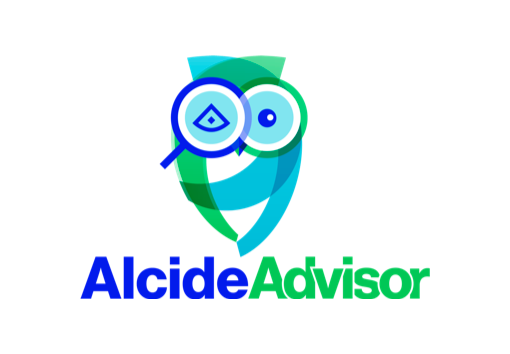

In this tutorial we will learn about Alcide Kubernetes Advisor, and how we can implement continuous security and cluster hygiene for one or more Kubernetes clusters.

Alcide Advisor is an agentless Kubernetes audit, compliance and hygiene scanner that's built to ensure a friction free DevSecOps workflow. Alcide Advisor can be plugged in early in the development process and before moving to production.
With Alcide Advisor, the security checks you can cover includes:
- Kubernetes infrastructure vulnerability scanning.
- Hunting misplaced secrets, or excessive privileges for secret access.
- Workload hardening from Pod Security to network policies.
- Istio security configuration and best practices.
- Ingress Controllers for security best practices.
- Kubernetes API server access privileges.
- Kubernetes operators security best practices.
- Deployment conformance to labeling, annotating, resource limits and much more ...
If you already have a running kubernetes cluster you can work with you can skip this step
For this tutorial you will need a Kubernetes cluster with enough permissions to deploy resources into it.
- Install and Set Up kubectl.
- Install Minikube, or any working Kubernetes Cluster

Download Files into /tmp and unpack
cd /tmp &&\
unzip -o tutorial.zip
For Linux
cd /tmp/training/advisor &&\
curl -o advisor https://alcide.blob.core.windows.net/generic/stable/linux/advisor &&\
chmod +x advisor
For Mac
cd /tmp/training/advisor &&\
curl -o advisor https://alcide.blob.core.windows.net/generic/stable/darwin/advisor &&\
chmod +x advisor

We are going to start with an initial cluster scan using the buitin scan profile.
cd /tmp/training/advisor &&\
./advisor validate cluster --cluster-context minikube \
--namespace-include="*" --namespace-exclude="-" --outfile scan.html
Open in your browser the generated report scan.html and review the result across the various categories.
google-chrome scan.html& or open scan.html&

The reality with Kubernetes clusters is that resources can be mutated as a result of variety of events.
For example:
- User making a manual change to the cluster (kubectl edit ...)
- Code change, that as part of a deployment pipeline, will end up in a running cluster
- A change in the deployment automation machinery such as Terraform or Ansible
Let's simulate such change ... we are going to add an AWS Access Key into a PodSpec
Delete nginx deployment from the cluster.
cat <<EOF | kubectl apply -f -
apiVersion: extensions/v1beta1
kind: Deployment
metadata:
labels:
run: nginx
name: nginx
spec:
replicas: 1
selector:
matchLabels:
run: nginx
template:
metadata:
labels:
run: nginx
spec:
containers:
- image: nginx
env:
- name: "aws_secret"
value: "AKIAI222221111BBBAAA"
imagePullPolicy: Always
name: nginx
resources: {}
EOF
Let's run the scan again and review the findings.
cd /tmp/training && ./advisor validate cluster --cluster-context minikube --namespace-include="*" --namespace-exclude="-" --outfile scan.html
Open in your browser the generated report scan.html and look at the Secret Hunting section
google-chrome scan.html& or open scan.html&
Maintaining a certain hygiene level in Kubernetes is challanging.
Doing so continuously, is a greater challange, and across multiple cluster that's even harder.
Cluster Hygiene Components
- Cluster infrastructure (Control plane, Nodes) hygiene - CVEs, hardenning
- Cluster resource hardening (monitoring, ingress, service...)
- Workloads configuration & hardenning
- Workload software supply chain hygiene
Let's start with establishing a baseline of whatever is currently running in a cluster.
The assumption here is that existing environment satifies our hygiene expectations - but that is not necessarily the reality, which is why reviewing a full cluster scan is critical from best practice perspective.
cd /tmp/training/advisor &&\
./advisor generate policy-profile --cluster-context minikube --namespace-include="*" --namespace-exclude="-" --outfile baseline.yaml
Let's introduce a new resource into the cluster, which use an image from an unauthorized location.
cat <<EOF | kubectl apply -f -
apiVersion: extensions/v1beta1
kind: Deployment
metadata:
name: hello-badimage
spec:
replicas: 1
selector:
matchLabels:
run: hello-badimage
template:
metadata:
labels:
run: hello-badimage
spec:
containers:
- image: k8s.gcr.io/echoserver:1.10
imagePullPolicy: IfNotPresent
name: hello-badimage
ports:
- containerPort: 8080
protocol: TCP
EOF
Let's run the scan again, but now with the generated profile,
which contains a the list of observed image registries and review the findings.
cd /tmp/training/advisor && ./advisor validate cluster --cluster-context minikube --namespace-include="*" --namespace-exclude="-" --policy-profile baseline.yaml --outfile scan.html
Open in your browser the generated report scan.html and look at the Secret Hunting section
google-chrome scan.html& or open scan.html&
Open and edit advisor-minikube-demo.sh
Run the playbook
cd /tmp/training/advisor &&\
export DEFAULT_TEXT_EDITOR=vim &&\
export WEB_BROWSER=google-chrome &&\
export KUBE_CLUSTER=minikube &&\
./advisor-minikube-demo.sh

CI+CD Integration samples
See https://github.com/alcideio/pipeline
GKE Multi-cluster Scan Example